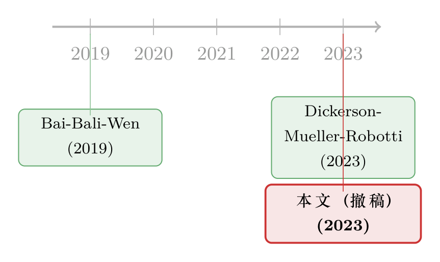

一篇被作者亲手撤回的 JFE：当「公司债四因子」死于一次时间对齐错误
本文读的是一份特殊的「论文」——Bai, Bali & Wen (2023, Journal of Financial Economics) 的撤稿声明 (retraction notice)。它撤回的是同一批作者四年前那篇被反复引用的 Common Risk Factors in the Cross-section of Corporate Bond Returns (2019)。撤稿的理由只有一句话那么短：数据里存在不同序列之间的时间错位 (temporal misalignment)；一旦把这个错误修正，原文赖以成名的核心结论——那几个公司债因子有「增量定价能力」——不复存在，唯一勉强幸存的，是捕捉流动性风险的那个因子。
1 引言：一份只有半页纸的「论文」
我们这个系列读过很多论文，长的四五十页，短的也有二十页。但今天这一篇，正文连半页都不到。它没有数据、没有回归表、没有稳健性检验，甚至没有一个图。它是一份撤稿声明。
在金融学顶刊里，撤稿是极其罕见的事。一篇文章被质疑、被反驳、被后人「打补丁」很常见，但作者主动跑到期刊面前说「请把我这篇撤了」，几乎闻所未闻。更何况，被撤的这篇不是无名之辈——Bai, Bali & Wen (2019) 发表在 JFE 上，提出了一套公司债的共同风险因子，被无数后续研究当作公司债领域的「Fama-French」来引用、来做基准。
于是一个很自然的问题浮上来：到底发生了什么，能让三位作者甘愿亲手抹掉自己一篇高引论文？答案藏在两个词里——「时间错位」。
2 被撤的那篇说了什么
要理解这次撤稿的分量，得先回到 2019 年那篇原文的主张。
Bai, Bali & Wen (2019) 想干一件事：给公司债市场建一套因子模型 (factor model)。在股票市场，我们早就有了市场、规模、价值、动量这些因子；但债券市场长期缺一套被广泛接受的定价框架。他们的答案是，公司债的横截面收益可以由四个因子来解释：
- 一个债券市场因子 (bond market factor)，即整个公司债市场的总收益；
- 一个下行风险因子 (downside risk factor)，捕捉债券在坏时段的尾部暴露；
- 一个信用风险因子 (credit risk factor)；
- 一个流动性风险因子 (liquidity risk factor)。
原文的卖点在于：这后三个因子带着统计上显著的风险溢价 (statistically significant risk premia)，而且这套四因子模型在解释按行业、规模、期限分组的公司债组合收益时，优于已有的其它债券定价模型。
用最朴素的话讲，他们声称：除了「整个债市一起涨跌」之外，下行、信用、流动性这三股力量，各自都对债券的预期收益有额外的、不可被市场因子吸收的贡献。
这正是因子研究里最关键、也最容易出问题的一步——所谓「增量解释力 (incremental explanatory power)」。
3 真正关键的一步：什么叫「增量解释力」
接着，一个自然的问题是：怎么判断一个新因子是「真有用」还是「滥竽充数」？
标准做法是一个张成回归 (spanning regression)，也叫时序 alpha 检验。把候选因子（或按特征分组的组合收益）放在左边，把你已经承认的基准因子放在右边，看截距 \(\alpha\) 是不是显著不为零：
$$ R_{i,t} = \alpha_i + \beta_i\, MKT^{bond}_t + \varepsilon_{i,t} $$
这里 \(R_{i,t}\) 是第 \(i\) 个测试组合（或因子）在第 \(t\) 期的超额收益，\(MKT^{bond}_t\) 是公司债市场因子的收益。如果一组测试资产的 \(\alpha_i\) 联合地显著异于零，就说明仅靠市场因子「张不满」这些收益——还需要别的因子，新因子因而有了存在的理由。反之，若加进市场因子后 \(\alpha_i\) 全被压到零附近，那这个新因子就是多余的。
把四因子一起写出来，就是原文真正要检验的对象：
$$ R_{i,t} = \alpha_i + \beta_i^{m}\, MKT^{bond}_t + \beta_i^{d}\, DRF_t + \beta_i^{c}\, CRF_t + \beta_i^{l}\, LRF_t + \varepsilon_{i,t} $$
其中 \(DRF\)、\(CRF\)、\(LRF\) 分别是下行、信用、流动性三个因子的收益。原文的结论，本质上就是：相对市场因子，这三个因子各自把对应那组测试资产的 \(\alpha\)「解释干净」了，所以它们有增量定价能力。
注意：这套时序检验里，因子收益的时间戳必须严丝合缝地对齐。左边的组合收益是在第 \(t\) 期实现的，右边每一个因子也必须是同一个第 \(t\) 期。一旦某个序列的时间被错位——比如某个变量实际是 \(t-1\) 期的、却被当成 \(t\) 期塞进了回归——整张表的 \(\beta\) 与 \(\alpha\) 就全乱了。这正是后面那场「翻车」的引信。
4 反转：一次时间对齐错误
然后，反转出现了。
撤稿声明里写得很克制：后续研究 Dickerson, Mueller & Robotti (2023) 用一套类似的公司债收益数据 (a similar dataset of corporate bond returns)，复现 Bai et al. (2019) 时，发现原文所用数据里有一个错误——不同数据序列之间存在时间错位。
这句话听上去平淡，但要命。公司债的实证研究，数据本就比股票脏得多：报价稀疏、成交不连续、不同来源（如 TRACE 成交数据、债券特征数据、评级数据）需要拼接对齐。只要在「哪一期对哪一期」这件事上错了一格，因子的构造、组合的排序、回归的右手边就全部跟着偏。
Dickerson et al. (2023) 的发现是：在不含这个错误的数据里重做，Bai et al. (2019) 那几个因子，相对公司债市场总收益不再有增量解释力——唯一勉强算例外的，是捕捉流动性风险的那个因子。换句话说，把数据的时间戳摆正之后，原本「显著」的下行风险溢价、信用风险溢价，大半塌掉了，整套四因子相对一个简单的「债市 beta」并没有讲出多少新东西。
更值得敬重的是结尾那几句：原文作者确认自己的结果确实建立在含上述错误的数据之上；论文关于因子解释力的主结论，经不起这个数据错误的修正；他们「为此对期刊与学术共同体造成的损害深感歉意」。
于是，一篇高引的 JFE 论文，就以「应作者请求撤稿」收场。这不是被别人推翻，而是作者自己把它从墙上摘了下来。
5 文献脉络：公司债的「因子动物园」与一场迟到的体检
把这件事放回二十年的研究长河里看，会更有意思。
股票市场的因子研究，早就经历过从「发现因子」到「质疑因子」的钟摆。人们先是热衷于往模型里加因子，造出了所谓的「因子动物园 (factor zoo)」；随后才有一波反思：很多因子其实是数据挖掘、是构造方式的产物，换一种构造、换一个样本、修一个 bug，就消失了。关于因子怎么被「弱替代」一步步堆成动物园，可参见《弱替代：因子动物园是从哪里冒出来的？》；而一个因子的成败常常取决于一个变量「怎么构造」这种细节，也正是《因子模型的成败，藏在一个变量的「构造方式」里》讲的故事。
公司债市场的因子研究，起步晚、数据更脏，但走的是同一条路。Bai, Bali & Wen (2019) 是这条路上一座醒目的里程碑——它试图给债券市场立一套「标准因子」。但债券实证的脆弱也在此暴露无遗：当数据对齐这种「管道工」级别的细节出错时，再漂亮的因子都可能是空中楼阁。Dickerson, Mueller & Robotti (2023) 那篇 Priced risk in corporate bonds，正是给这套因子做的一次迟到的体检，体检结论催生了 2023 年这份撤稿。

这条脉络也提醒我们，公司债定价里「谁在定价、价从何来」远未尘埃落定。关于持有人结构如何左右债券价格，可参见《谁在持有这张债券，决定了它的价格》；关于公司债收益能否被「看懂」地预测，可参见《把机器学习的黑箱拆成玻璃箱：公司债收益率能被「看懂」地预测吗？》。
6 评论与延伸（Q&A + 研究方向）
(a) 几个可能的疑问
Q：一个「时间错位」真有那么致命吗，不就是错了一格？
在因子检验里，致命。整套方法的核心就是「同期的收益用同期的因子去解释」。一旦某个序列被整体平移一格，它和被解释组合之间的相关结构就被人为制造或抹掉了——可能凭空造出一个「显著」的 beta 与溢价，也可能把真实关系冲淡。公司债数据要拼接成交、特征、评级多个来源，对齐本就是高风险环节，错一格的后果会被放大到每一张回归表。
Q：撤稿是不是意味着「公司债没有下行/信用/流动性风险溢价」？
不能这么读。撤稿只说这篇论文用这套数据得出的那个结论不成立——即这三个因子相对债市总收益的增量解释力没了。它没有否认这些风险本身的存在或重要性。事实上，连 Dickerson et al. (2023) 也承认流动性因子是个勉强的例外。结论应是「证据不足/构造存疑」，而非「风险不存在」。
Q：为什么单单流动性因子能勉强幸存？
撤稿原文只说流动性是「marginal exception（边际意义上的例外）」，没给细节。一个合理的猜测是：公司债市场的流动性溢价在文献中本就证据最硬、最稳健——债券交易稀疏，流动性是第一性的摩擦。相比之下，下行和信用风险更依赖具体的因子构造与时间对齐，因而更脆弱。但要强调，这只是「边际」幸存，不宜过度解读。
Q：作者主动撤稿，是该批评还是该尊重？
该尊重。被别人指出错误后，选择沉默、辩解、或淡化，是更常见的人性反应；公开确认错误、请期刊撤稿，是把学术诚信放在个人声誉之上的做法。这份声明本身，反而是这条研究线最有价值的一次「结果」——它给整个领域上了一堂关于数据卫生与可复制性的公开课。
Q：那这套四因子还能继续当基准用吗？
应当停用，或至少标注「已撤稿」。任何把 Bai-Bali-Wen 四因子当作公司债定价基准的后续工作，都需要重新检视：自己用的因子收益是否来自含错数据，结论是否依赖那几个已被推翻的溢价。更稳妥的做法是改用经独立复现、对齐无误的因子序列。
Q：这件事和股票因子的「复制危机」是一回事吗？
精神上是，但病灶不同。股票那边的复制争议，多是 p-hacking、样本期、构造选择导致的「弱因子」；这里则是一个确凿的数据 bug。前者是「证据不够强」，后者是「证据建在错的地基上」。后者更干脆，也更难辩护——这也是为什么结局是撤稿，而不是又一轮你来我往的论战。
(b) 几个可能的研究问题与提案
1. 公司债因子的「可复制性审计」
【经济故事】股票因子已有大规模复制研究，公司债因子却几乎没有系统性审计。这次撤稿暴露出：债券因子对数据对齐、成交过滤、报价清洗极其敏感。一篇把主流公司债因子（市场、下行、信用、流动性、动量等）放在同一套干净
TRACE数据上、用统一对齐协议重做的「审计」论文，价值很高。【可行性】中。数据可得（
TRACE、Mergent FISD、评级数据），难点在于把每一套因子的原始构造细节复原并统一对齐——工程量大但 doable，识别上靠透明、可公开的构造代码而非新方法。
2. 时间错位的「破坏力」量化实验
【经济故事】我们直觉上知道时间错位有害，但缺一个系统刻画：在公司债这种稀疏成交的市场，错位一格会让一个本无溢价的因子「伪显著」到什么程度？可以做蒙特卡洛——在真实债券面板上人为注入不同幅度的错位，观察 \(\alpha\) 与 t 值的虚高分布。
【可行性】高。纯模拟+真实面板，不需要新数据，识别清晰，能给整个领域一个「错位敏感度」的基准表。
3. 流动性因子为何独活：从持有人结构找答案
【经济故事】既然流动性是唯一勉强幸存的因子，那它的溢价究竟来自谁？如果能把流动性溢价与外资持有人、保险、共同基金等不同持有人的交易行为对应起来，就能解释它为何比下行/信用更稳健——这恰好接上我对外资与公司债流动性的兴趣。
【可行性】中。需要债券层面的持有人数据（如保险
NAIC、基金持仓、TIC口径的外资），与债券流动性指标合并；识别上可借助持有人构成的外生变动（如指数纳入、监管冲击）。数据拼接是主要门槛。
4. 「撤稿冲击」的引文与定价后果事件研究
【经济故事】一套被广泛当基准的因子被撤稿，是一个有趣的自然实验：依赖它的后续研究会怎样调整？市场上以这些因子做风控/对冲的产品会不会重定价？可以追踪撤稿前后引用该因子的论文与从业实践的变化。
【可行性】中。引文数据可得（Google Scholar / Web of Science），定价后果一端较难识别，更适合做成「科学社会学 + 实证资产定价」的混合研究。
7 我的判断
作为评述者，我想说三点。
贡献。 这份声明的「学术贡献」是非典型的：它本身不产生新知识，但它销毁了一个错误的知识，并以最负责任的方式公开了销毁的过程。在一个习惯于「加因子、报显著、抢首发」的领域，主动撤稿是一种稀缺的诚实。它真正的价值，是把「数据对齐」这种平时没人写进论文、却决定成败的管道工细节，第一次摆到了聚光灯下。
对识别（这里是「对结论」）的担忧。 撤稿声明只给了一句话级别的解释，我们其实看不到错误的具体形态——是哪两个序列、错位了几期、影响了哪几个因子的哪几张表。真正的证据在 Dickerson, Mueller & Robotti (2023) 那篇里，而非这半页声明里。读者若想判断「流动性因子边际幸存」到底有多稳，必须去读那篇原始的反驳论文，不能只凭这份声明下结论。
后续想看到什么。 我最想看到的，是公司债因子领域一次彻底的、代码公开的「可复制性大盘点」：用一套统一、透明、对齐无误的数据，把所有主流债券因子重做一遍，明确告诉我们哪些活着、哪些死了、哪些只是「边际幸存」。在那之前，任何把这套四因子当作既定事实来引用的工作，都该先停下来，问一句：我用的因子，是不是也站在一格错位的时间上？
参考文献
Bai, J., Bali, T. G., & Wen, Q. (2019). Common risk factors in the cross-section of corporate bond returns. Journal of Financial Economics 131(3), 619–642.
Bai, J., Bali, T. G., & Wen, Q. (2023). Retraction notice to "Common risk factors in the cross-section of corporate bond returns" [Journal of Financial Economics 131 (3) (2019) 619-642]. Journal of Financial Economics 150, 103721.
Dickerson, A., Mueller, P., & Robotti, C. (2023). Priced risk in corporate bonds. Journal of Financial Economics 150, 103707.